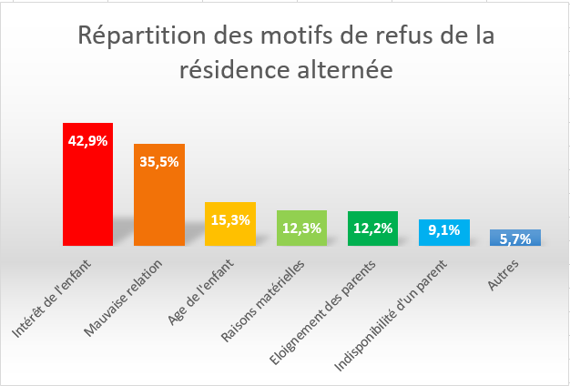

Bien que la connaissance générale de la procédure judiciaire puisse être intéressante, il n’est pas nécessaire de décrire ici le détail des différentes étapes. Il convient cependant, de présenter brièvement les étapes de la procédure qui nourrissent les débats sur la résidence alternée.
Si le divorce n’est pas prononcé par consentement mutuel, le divorce est dit contentieux. Dans ce cas, l’un des époux adresse une requête au juge aux affaires familiales. Il y précise les modalités qu’il souhaite mettre en place à propos de la résidence de l’enfant, de la pension alimentaire… Le juge organise alors une audience de conciliation obligatoire pour identifier les difficultés à venir et tenter de concilier les parents. En cas d’échec de conciliation, le juge fixe à l’issue de cette première audience l’organisation provisoire de la résidence de l’enfant, alternée ou non, le montant de la pension alimentaire ou encore la jouissance du logement à l’un des époux.
Ces décisions, retranscrites dans une ordonnance de non-conciliation ne sont que provisoires, elles ne sont valables que durant la procédure de divorce. Nous verrons dans la partie suivante que ces mesures provisoires sont critiquées en raison des répercussions qu’elles ont sur le jugement final. Le juge peut également proposer une mesure de médiation auprès d’un médiateur. Ce recours à la médiation est de plus en plus fréquent. Les anciens conjoints peuvent rencontrer des organismes, des associations ou des avocats responsables de ce processus de médiation. Des débats apparaissent alors sur l’organisation de cette médiation, il s’agit du point développé dans la dernière partie de cette rubrique.
Le juge a donc jusqu’au jugement final pour décider de l’ensemble des modalités de la vie familiale après le divorce : garde exclusive avec droit de visite et d’hébergement élargi ou non, résidence alternée, avec quelle répartition du temps, quelle périodicité et quelle organisation, le montant de la pension alimentaire et de la contribution économique à l’éducation…
Le juge est guidé dans sa prise de décision par l’article 373-2-11 qui fixe les critères qu’il doit notamment prendre en considération:
- La pratique que les parents avaient précédemment suivie ou les accords qu'ils avaient pu antérieurement conclure;
- Les sentiments exprimés par l'enfant mineur dans les conditions prévues à l'article 388-1;
- L'aptitude de chacun des parents à assumer ses devoirs et respecter les droits de l'autre;
- Le résultat des expertises éventuellement effectuées, tenant compte notamment de l'âge de l'enfant;
- Les renseignements qui ont été recueillis dans les éventuelles enquêtes et contre-enquêtes sociales prévues à l'article 373-2-12;
Un rapport du Ministère de la justice de 2012 La résidence des enfants de parents séparés De la demande des parents à la décision du juge, regroupe un ensemble de statistiques sur la résidence alternée notamment. Toutes les statistiques de cette partie proviendront de ce rapport. Dans les cas où la mère demande une garde exclusive, et le père une résidence alternée, 75% des mères obtiennent la garde exclusive. Certains de ces motifs conservent une part de subjectivité et sont donc au coeur des protestations notamment chez les pères qui soulignent l’injustice de la situation actuelle illustrée par le chiffre précédent.
La réalité des décisions juridiquesEn effet, face aux indications présentes dans la loi, le juge est seul pour juger de la meilleure solution à adopter en prenant en compte tous les paramètres.
La résidence alternée nécessite dans la plupart des cas, une bonne entente entre les parents qui seront amenés à se rencontrer régulièrement, la proximité de leur domicile, mais aussi une certaine aisance financière. En effet, les parents doivent pouvoir conserver deux logements capables d’accueillir dans des bonnes conditions un ou plusieurs enfants. Ces différents facteurs se retrouvent dans les statistiques des motifs de refus de résidence alternée en 2012 rassemblés dans le rapport du Ministère de la justice :

- l’intérêt de l’enfant;
- l’éloignement entre les domiciles des deux parents;
- l’âge de l’enfant;
- les mauvaises relations entre les parents;
- l’indisponibilité d’un des deux parents;
- les conditions matérielles;
- les capacités éducatives insuffisantes d’un des deux parents;
La décision peut convoquer un ou plusieurs motifs.
Il est intéressant de s’attarder sur les critiques qui apparaissent face à trois de ces motifs de refus de résidence alternée.
La stabilité de l’enfant
Les oppositions face à cette justification touche directement l’organisation de la procédure judiciaire actuelle.
En effet, au cours de l’entretien que nous avons mené avec le député Philippe Latombe, auteur d’une proposition de loi sur la résidence alternée, il a évoqué le fait que les décisions définitives du divorce ne s’appuient parfois que sur la conservation du régime décidé provisoirement pour ne pas perturber l’enfant. Il s’agit d’ailleurs du premier point de l’article 373-2-11 qui invite le juge à tenir compte des décisions antérieures. Cependant, ce régime provisoire n’avait été mis en place sur la base d’aucune enquête et seulement à l’issue de l’audience de non conciliation.
Les chiffres du ministère de la justice confirment ses dires, dans 71% des cas dont les données sont connues, la décision provisoire est conservée après le jugement. De plus, la résidence provisoire est dans 80% des cas fixée chez la mère. D’après Philippe Latombe, un tel argument ne peut pas être utilisé du fait de son injustice. La stabilité utilisée pour justifier la conservation du système de résidence ne provient que des temps d’attente judiciaires dont le père n’est pas responsable. Il est vrai que l’attente d’un jugement de divorce peut aller de deux mois à Paris jusqu’à un an en Seine-Saint-Denis. Philippe Latombe appelle donc à une modification de l’organisation judiciaire qui aboutirait à des décisions plus justes en supprimant ce type d’argument.
L’intérêt de l’enfant
Par ailleurs, la subjectivité et l’absence de réelles raisons pour justifier le refus de résidence alternée est pointée du doigt par les associations de pères. En effet nous voyons que dans 30.6% des cas, le seul motif annoncé est « Dans l’intérêt de l’enfant » sans plus de précision. Ces chiffres expliquent l’indignation des pères, jugé un obstacle à l’intérêt de leur enfant qui n’obtiennent qu’un droit de visite et d’hébergement. Philippe Latombe souligne la violence de cette tournure officielle et l’absence de justification supplémentaire pour les pères.
L’âge de l’enfant
Ce motif est quant à lui controversé à une plus grande échelle et fait intervenir de nouveaux acteurs, les scientifiques.
Les statistiques montrent que l’âge de l’enfant est un facteur déterminant dans le choix du juge. La question d’un âge minimal divise la communauté scientifique. Lorsque les juges prennent leur décision sur ce critère, qui concerne 15% des cas, le juge s’appuie sur l’opinion et les études d’un cercle influent de médecins spécialisés dont Golse et Berger sont les plus célèbres. Golse, chef de service à l’hôpital Necker dénonce les conséquences sur l’enfant de la résidence alternée et notamment sous l’âge de 4 ans. Le professeur Berger considère que la mère est la figure de rattachement principale face à celle du père pour le développement de l’enfant et donc notamment pour les plus jeunes. Par ailleurs, les juges aux affaires familiales reçoivent les bases de psychanalyse à l’École de magistrature dans laquelle le professeur Berger enseigne.
Le point de vue de ce professeur est donc transmis aux futurs juges aux affaires familiales qui peuvent être influencés dans leurs décisions à venir. C’est de plus un point de vue ancré dans les esprits depuis Françoise Dolto. Ainsi les scientifiques qui le défendent ont plus de poids et plus de crédibilité que la nouvelle école. Par ailleurs, les statistiques montrent que plus l’enfant est jeune, plus le nombre de garde exclusive accordée à la mère est grand.
Ces chiffres appliquent parfaitement les théories de Golse et Berger. La question d’une formation équilibrée des juges se pose alors.
La médiation familiale intervient dans les débats sur la résidence alternée à propos de la pertinence de sa place au sein de la procédure judiciaire.
La médiation familiale est née en France sous l’influence canadienne dans les années 80. Il faut attendre 2002 pour obtenir une reconnaissance juridique de la médiation familiale avec l’article 373-2-10 à la suite d’un processus de plusieurs années de définition de la médiation et de ces acteurs. La promotion de la médiation est menée par des associations dont les plus importantes sont l’Association pour la Promotion de la Médiation Familiale et la Fédération Nationale de la Médiation et des Espaces Familiaux (Fenamef). La médiation familiale a pour but de créer un temps d’échange pour reconstruire le dialogue et l’écoute en période de conflits parentaux et notamment en cas de divorce en étant guidés par un intervenant neutre, extérieur au conflit et à la procédure judiciaire. Comme le montre l’article de loi, la médiation doit permettre de recentrer les anciens conjoints sur leur parentalité qui elle, ne disparaît pas avec le divorce. Elle vise à déterminer comment redéfinir une parentalité équilibrée dans la nouvelle situation qui se présente. Les médiateurs familiaux, détenteurs d’un diplôme d’état exercent au sein d’associations comme l’UDAF (Union Départementale des Affaires familiales) ou dans des organismes publics comme la CAF (Caisse d’Allocations Familiales).
Comme nous l’avons vu, le juge peut conseiller une médiation familiale après l’audience de conciliation. Il peut imposer une double convocation qui consiste en une réunion d’information avec les deux parties. Les parents ne sont pas obligés de poursuivre la médiation après cette réunion. Ces mesures sont prises dans un tiers des cas de désaccord.
Cependant, comme pour le critère de stabilité, la mesure provisoire a déjà été prise à ce stade de la procédure. Dans 78% des cas, la résidence a été fixée chez seulement l’un des deux parents. Ainsi, la situation est d’ores et déjà asymétrique. Celui ayant obtenu la garde provisoire n’a pas intérêt à négocier, il est pratiquement certain de la conserver. L’autre partie part déjà perdante selon les statistiques et ne sera pas dans les bonnes conditions pour discuter calmement. C’est une nouvelle fois ici le problème de l’organisation des temps juridiques qui est pointé du doigt.
Néanmoins, la CNAF a publié un dossier d’étude en 2015 sur les statistiques recueillies entre 2012 et 2013 qui dresse un bilan des services de médiation familiale et de ses résultats. A l’issue des entretiens d’information dans le cas d’une double convocation, les parents qui discutent de la résidence alternée ont décidé de poursuivre la médiation de leur plein gré dans 49% des cas. Il semblerait donc que pour la moitié des couples en médiation familiale, le couple soit ouvert à la discussion et enclin à la médiation. D’après cette étude, 59% des médiations familiales ont abouti à la réalisation d’un accord. Dans les situations de désaccord, 41% ont permis une avancée dans la réduction du conflit. Cependant deux derniers chiffres concernent l’ensemble des médiations familiales et pas seulement celles concernant la résidence alternée. Ils illustrent tout de même l’espoir qui réside dans ce processus.
Malgré ces chiffres prometteurs, la médiation familiale n’est sollicitée que dans un tiers des cas. Les associations de promotion et des acteurs publics comme le Conseil économique, social et environnemental militent pour une meilleure connaissance et reconnaissance de la médiation familiale et de ses professionnels. Dans un rapport nommé Les conséquences des séparations parentales sur les enfants, ce conseil souligne l’importance de la conservation du lien de l’enfant avec chacun de ses deux parents. Selon eux, ceci n’est possible qu’à travers de bonnes relations entre les parents ou en cas de résidence alternée. Ils croient au potentiel de la médiation pour l’apaisement des conflits familiaux.